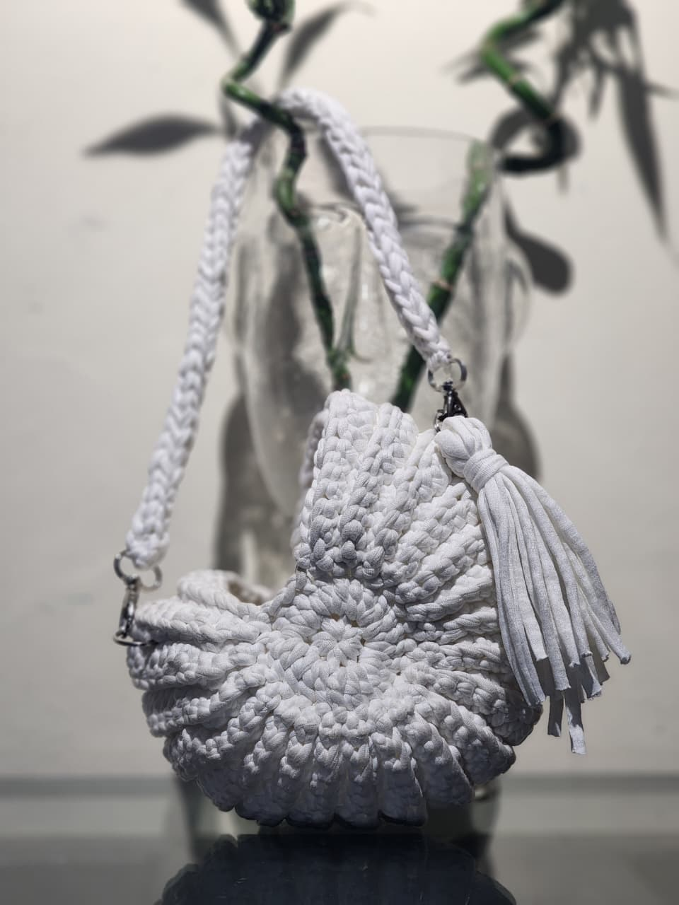
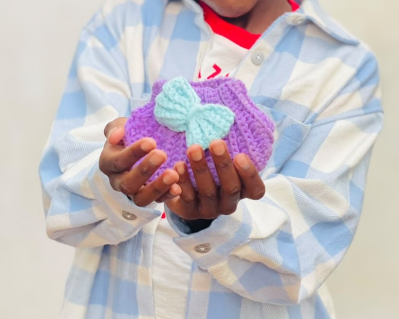
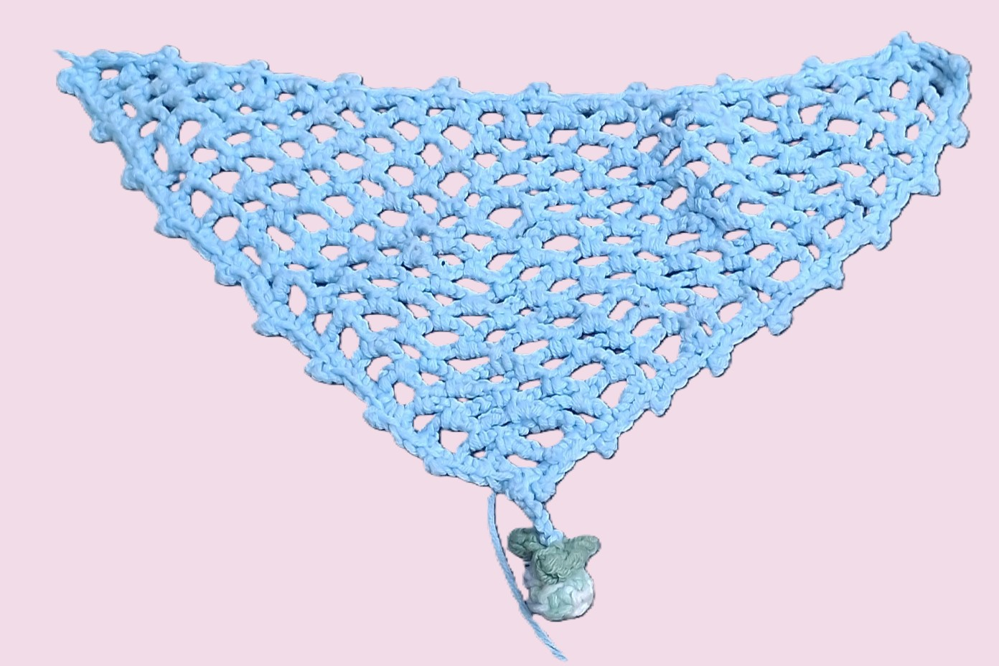
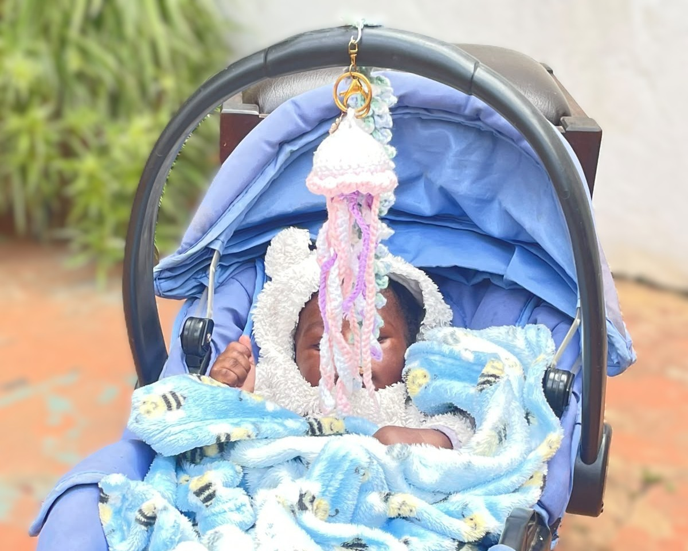
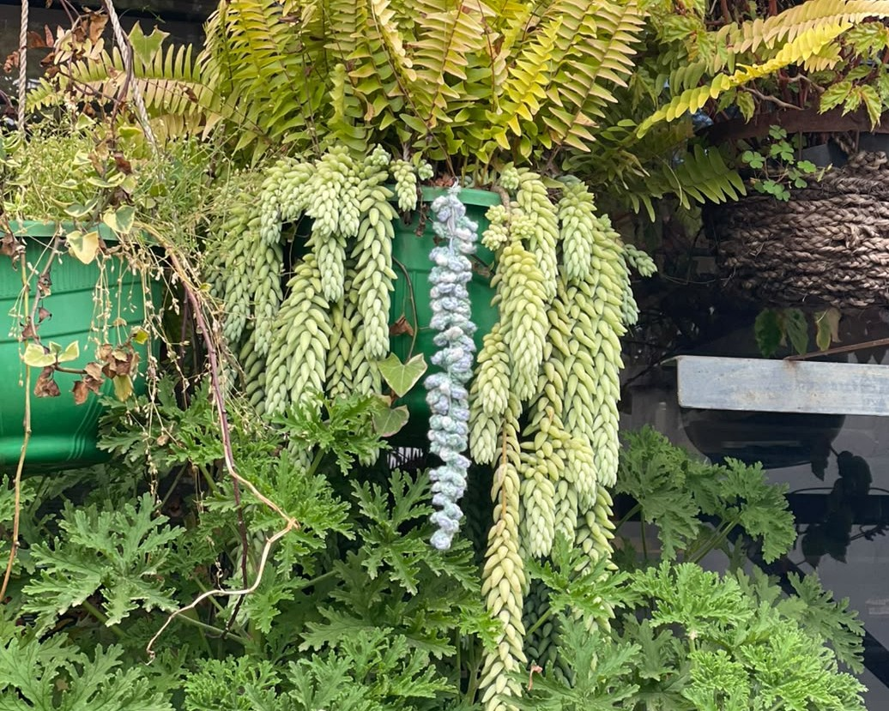
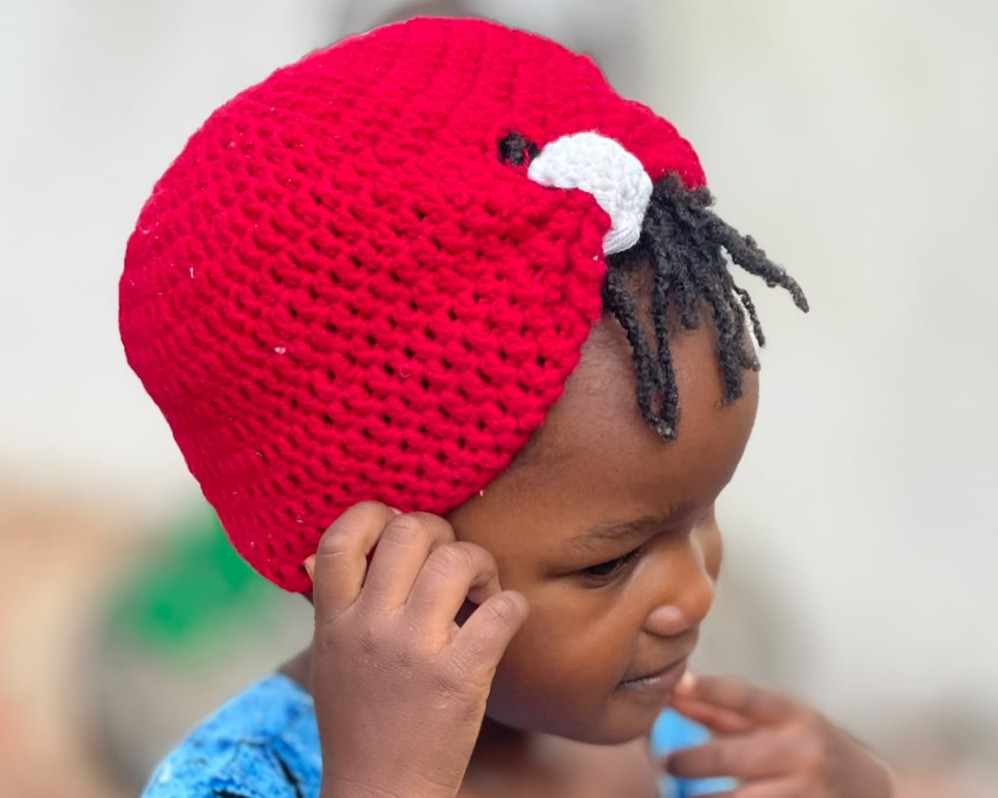
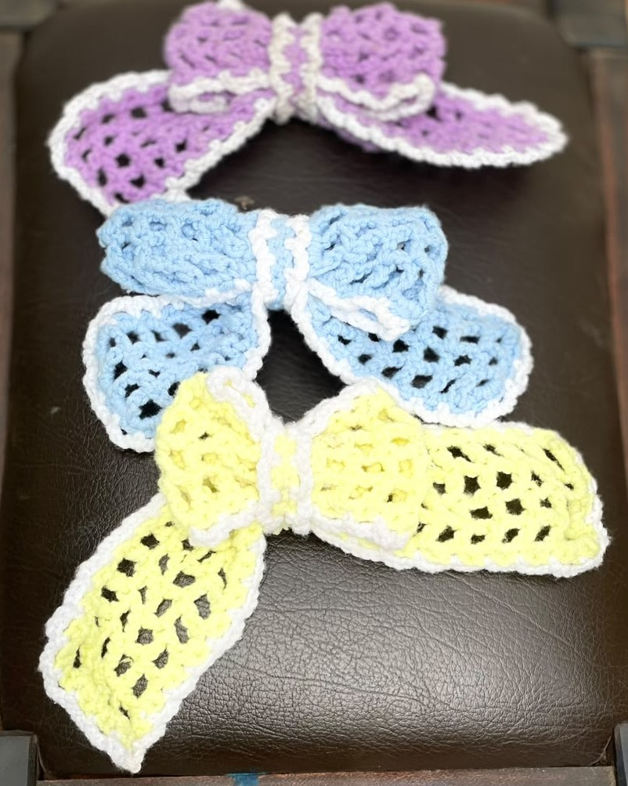
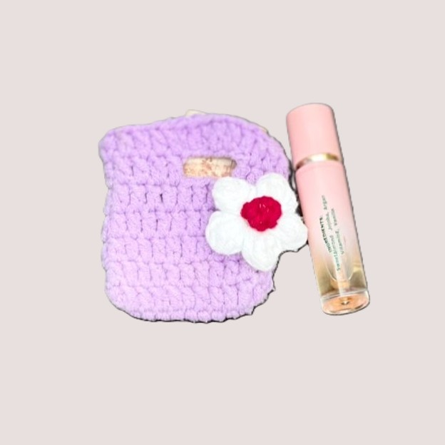
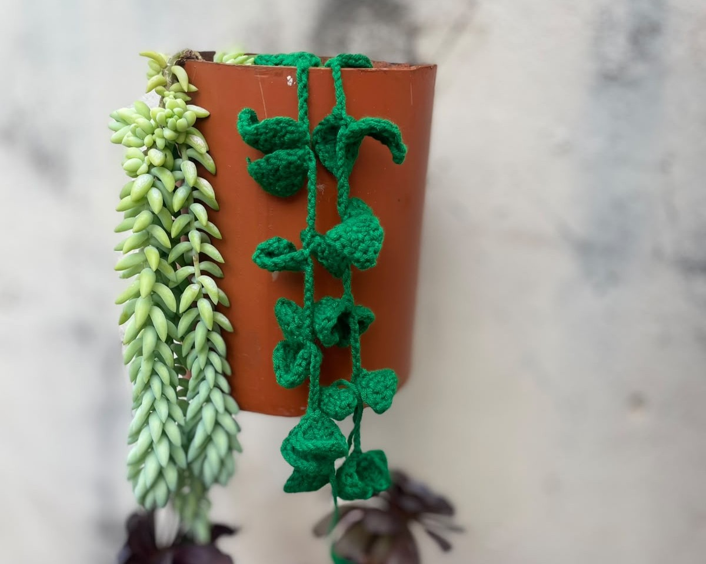

Shell Bag
A sea-inspired statement piece
KSh 1,800View piece
Small-batch crochet · made in Nairobi
Playful bags, tiny charms and cozy pieces, stitched slowly by hand and made to stay with you.
✦ Every piece is handmade in small batches

Fresh from the hook

A sea-inspired statement piece

Easy color for sunny days

Soft, silly and full of character

Blooms that never need watering
Made by one pair of handsSlowly stitched in the studio
Small batches onlySpecial pieces, never mass-made
Made to bring joyColor, comfort and character
Find your favorite

made with love ♡Behind the stitches
What began as a love for yarn and quiet afternoons became a tiny studio filled with color, experiments and happy little objects. Every piece is made by hand, from the first loop to the final detail.
Our studio storyKind words
“It is even cuter in person. You can feel how much care went into every stitch, and the colors make me smile every time.”
★★★★★“My custom pouch came out exactly how I imagined it. Beautifully made, wonderfully soft and completely unique.”
★★★★★From the studio


